第四篇 · 执行引擎与动态编译
第 17 章 编译器如何优化Java程序
优化改变物理执行步骤，约束来自数据、控制、内存与恢复状态。是否发生某项转换，要沿字节码、编译事件与机器码逐层判断。
从现象开始
local与escaped的源代码都创建Pair：前者本轮消除了分配，后者保留；locked还消除了局部锁。数组循环实际生成向量指令。技术基线为Java开发工具包（Java Development Kit，JDK）25.0.5.0.2、HotSpot、macOS AArch64；这些是特定编译的事实，不是所有相似源码的保证。
17.1 中间表示与数据依赖
本节配图：CH17-F01。
17.1.1 用值与依赖表达程序
中间表示（Intermediate Representation，IR）让编译器在源代码与机器码之间组织分析。静态单赋值（Static Single Assignment，SSA）使每个定义有独立名字，控制流合并时用Phi表达来自不同路径的值。服务端编译器（Server Compiler，C2）的图节点把控制、数据以及内存状态联结起来；图上的边比源码先后行号更直接表达哪些计算可以移动、合并或删除。
例如同一对象字段的写后读，需要看它们是否指向同一内存位置、路径间有无其他写，以及调用是否可能修改该字段。只有控制依赖并不够。别名分析把可能互相影响的内存访问组织起来，内存Phi在分支合并处保留不同前驱状态，不能把它当作普通数值Phi随意删去。
17.1.2 两类编译器表示不同，约束相同
客户端编译器（Client Compiler，C1）先建立较高层表示，再降低到低层中间表示（Low-Level Intermediate Representation，LIR），安排寄存器和机器操作；C2则经图化理想节点、循环变换及机器节点匹配推进。它们使用不同预算和组织，不意味着C1只会逐字节码翻译，或C2可以忽略异常与内存语义。
Java内存模型（Java Memory Model，JMM）规定允许的跨线程观察，方法内数据流优化必须与这些约束兼容。第25章将系统论证同步关系；本章提前核查语言规范第17章，尤其不把volatile发布当作普通死写删除。

17.2 基础优化与内联
17.2.1 把转换归到真正做它的阶段
folded里8*3在javap中已经是常量24，这是javac完成的折叠。C2记录再表明twice被内联，解码后主体为两条add：先value+value，再加0x18。把字节码与机器码一同保存，才能避免将前端编译结果误算为动态编译新增优化。
常量传播沿已知值把后续表达式简化；公共子表达式消除要求操作及其依赖等价；死代码消除要求结果与副作用没有允许观察到的用途。会抛异常的访问、volatile读写或可能有副作用的调用，不能仅因返回值未用就无条件移除。整数溢出按Java规则保留，浮点结合变换还需满足更严格的数值语义。
17.2.2 内联既增加视野，也消耗预算
方法调用原本隔开了数据流。内联twice后，编译器可看到加法；内联Pair构造器后，可把字段写与随后读取连起来。它是分配消除、范围推导和去虚化的重要前置，不只是节省一次跳转。
内联会扩大图和机器代码，增加编译时间与代码缓存压力。递归深度、大方法、调用形态、类型守卫和预算可能阻止它。本轮用dontinline保留五个待观察方法的独立编译，仍允许它们内部的小helper与构造器内联。该配置是观察安排，不能称作完全默认策略。
17.3 对象与锁优化
本节配图：CH17-F02。
17.3.1 非逃逸与可标量替换需要共同成立
local创建Pair，只读取left与right，返回两者之和；escaped额外把Pair写到volatile published，使对象能被外部访问。锁定ConnectionGraph执行逃逸与字段关系分析，PhaseMacroExpand::eliminate_allocate_node进一步检查非逃逸、可标量替换、使用者及安全点恢复需求。非逃逸不是唯一充分条件。

本轮编译号22的local有eliminate_allocation，编译号24的locked有NonEscObj锁／解锁消除及分配消除。机器码主体只有加法，escaped保留更长的分配与发布路径。这与第11章的内存效果相接，但不等于对象普遍栈上分配；局部值可能在寄存器或溢出槽中，逻辑对象也可能暂时没有实体。
17.3.2 消除、粗化与恢复成本
locked的全新Pair不发布，没有其他线程能竞争这个监视器，运行时可在保持允许行为的前提下消除其锁。锁粗化则把适当的相邻加锁区间合并，可能减少次数但扩大占用区间；它与移除无人可观察的锁不是同一种转换。异常处理、方法调用或其他可见动作会限制变换。
消除对象也需要为去优化保留字段、身份与监视器状态，不能仅删除所有相关信息。若遇到不能标量表达的使用者、复杂合并、未内联调用或不可恢复状态，分配仍可能保留。本轮未主动构造这些失败输入，失败条件来自锁定实现分支与语义约束，不能编造对应运行结果。
17.4 循环、向量化与内建函数
本节配图：CH17-F03。
17.4.1 先证明范围，再移动重复检查
transform按input.length遍历，写入output相同索引。Java要求越界和空引用访问遵守异常语义；编译器可以先检查适当长度关系，将稳定条件移到循环外，为主体建立已知安全范围。循环剥离、展开或分段可以为向量主体和标量尾部创造形态，但不能把output可能过短时的行为改成任意内存访问。
本轮两个transform编译版本均有向量加法，普通入口还可见标量尾部与入口条件。没有声称每一个范围检查都消失，也没有通过仅统计编译成功来认定向量化。

17.4.2 自动向量化与内建替换各有入口
自动向量化分析相邻迭代或操作的独立性，把多个标量操作组成向量。本例ldr q17、add.4s和str q17分别承载四个int的加载、加法与写回。若迭代间有依赖、别名关系无法排除、控制流不适合或目标机不支持，可能只保留标量代码。
内建函数（intrinsic）则由编译器识别特定库方法，以语义等价的专门节点或指令替换调用。本例调用Integer.bitCount，但本轮独立编译并不自动证明调用者用了内建替换；应看对应调用点的intrinsic记录或指令。本章把bitCount作为候选展示，不将其单独编译到第4层当作已内建的证据。向量化不要求源码调用Vector类，内建替换也不一定产生向量指令。
17.5 从优化图到机器码
本节配图：CH17-F04。
17.5.1 选择、调度与寄存器分配继续改变形态
优化图稳定后，Matcher依据目标机规则选择机器节点；调度在依赖约束下安排顺序，寄存器分配为活跃值分配有限寄存器。C2的PhaseChaitin实现图着色相关分配工作，资源不足时需要把值溢出到栈槽并补加载／保存。溢出槽保存值，不由此成为一个完整Java对象。
最终代码还含入口检查、栈帧建立、轮询、异常与去优化续点。folded的核心计算只有两条add，但main code有96字节；不能把整个代码长度都归为算术，也不能把核心两条指令说成完全没有帧和运行时协作。
17.5.2 同样的语义，架构规则可不同
本机AArch64规则addI_reg_reg可用独立目标和两个源寄存器；x86-64的非扩展规则可受两操作数与寻址折叠影响；锁定源码还包含高级性能扩展（Advanced Performance Extensions，APX）条件下的独立目标规则，某些表达式也可选lea。寄存器数量、立即数范围、向量能力与调用约定又会影响后续调度和溢出。因此跨架构对照先比较同一语义和选项，再比较实现规则，不能逐条寻找必然一一对应的助记符。
| 目标与条件 | 规则 | 源码format模板 | 本轮直接证据 |
|---|---|---|---|
| AArch64寄存器加法 | addI_reg_reg | addw $dst, $src1, $src2 | 机器字节解码为add w10,w1,w1 |
| x86-64，非APX | addI_rReg | addl $dst, $src | 同提交源码规则；未运行此架构 |
| x86-64，启用APX条件 | addI_rReg_ndd | eaddl $dst, $src1, $src2 | 同提交源码规则；未运行此架构 |
format用于HotSpot的机器节点诊断显示，不能把它直接当作系统汇编器语法。AArch64模板中的addw在本轮反汇编中呈现为使用w寄存器的add；x86非扩展规则把目标同时作为一个输入，扩展规则可描述独立目标。表中比较的是规则和输出含义，没有据此推导指令数、吞吐或平台优劣。
本轮仅AArch64有真实机器码。x86-64为同一锁定源码规则研究，没有运行该架构。release构建拒绝PrintIdeal，原始错误已保留；图F01明确是依据源码和实际编译结果绘制的依赖示意，不伪装成工具导出的完整优化图。精细追踪每个中间节点的任务需另准备诊断构建，本章不据缺失图推造转换时序。

证据与复做
固定50000次，最终结果10001532512、数组末项256、发布值49999。C2日志标出local和locked分配消除及locked锁消除。hsdis加载失败后，将实际打印字节原样封装为不可执行对象文件，以系统otool解码；保留原始基址、main code范围、封装源和输出，未执行这些对象文件。字节码与原始输出仍是首要输入证据。
folded主体：add w10,w1,w1 → add w0,w10,#0x18
transform向量主体：ldr q17 → add.4s → str q17所有分支地址在对象文件里以相对零基地址显示，需按decode-index加回原始基址解释，不能把解码对象文件的地址直接当成运行地址。
回顾与边界
对一个优化结论至少回答：哪个编译版本、哪项转换、哪条语义约束、哪份直接证据？没有分配事件不证明零分配，独立库方法已编译不证明调用点内建，图中能简化不证明实际编译已经简化。下一章解释这些物理表示怎样在假设失效后恢复。
来源
- S01：Java语言规范25第17章，同步与可观察行为的约束。
- S02：锁定C1／C2管线、escape.cpp、macro.cpp与循环优化；具体符号见索引。
- S03：同提交aarch64.ad与x86_64.ad指令匹配规则。
- O01：本章编译日志、机器字节、解码与输入摘要。